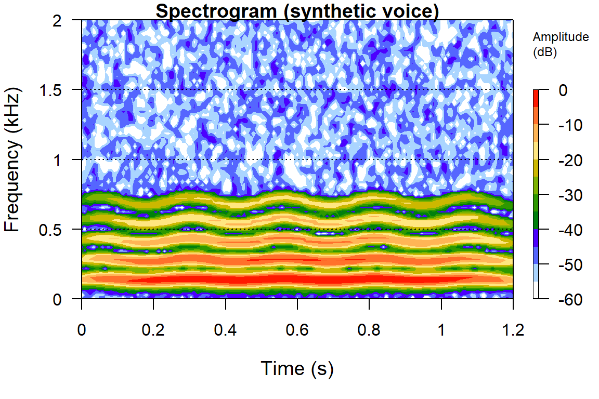
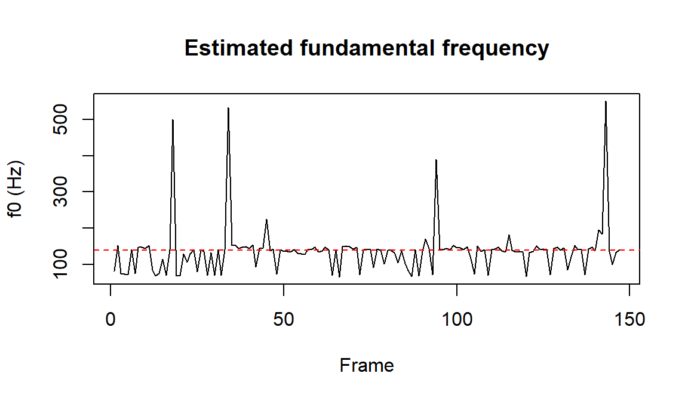

41 Audio, Voice, and Speech
Marketing has a soundtrack. A call-center recording, a podcast ad read, a voice-assistant exchange, a thirty-second spot scored to a swelling string line, the timbre of a spokesperson’s voice: each is an acoustic artifact that carries information about what a person said and, just as importantly, how they said it. For most of the discipline’s history that information was inaccessible at scale. Audio could be played back and judged by a human coder, but it could not be turned into the kind of numbers that enter a demand system, a choice model, or a regression. What has changed is that a waveform can now be transcribed, characterized, and embedded automatically across millions of recordings, so the acoustic layer of marketing becomes data in the same operational sense that text (Chapter 38) and images (Chapter 40) already are.
The intellectual move is the one this part has made repeatedly. An unstructured artifact, here a one-dimensional pressure signal sampled in time, is mapped into a feature vector that a marketing theory can speak about. As with text and images, the representation is lossy and learned, and the central econometric caution carries over without modification: an acoustic feature is a generated regressor whose measurement error can correlate with the outcome it is meant to explain, so a naive regression confounds measurement with effect. Audio adds one distinctive opportunity, which organizes much of this chapter. A spoken utterance has two separable channels: the lexical channel (the words, recoverable by transcription and then handed to the entire text-as-data pipeline) and the paralinguistic channel (pitch, loudness, rhythm, voice quality, the acoustic carrier of emotion and emphasis). The distinction between what is said and how it is said is the payoff of treating audio as its own modality rather than as a noisy path to a transcript.
The chapter proceeds from signal to construct to application. It first surveys where audio enters marketing. It then fixes what a digital sound is and develops the classic acoustic features that have powered speech and music analysis for decades, with a runnable demonstration that synthesizes a voice-like waveform and extracts a spectrogram, mel-frequency cepstral coefficients, a fundamental frequency contour, and a spectral centroid from it. With those primitives in hand it turns to automatic speech recognition and speech analytics, to vocal emotion and prosody, and to music and sonic branding. It closes with the realities of production practice and a short look at the frontier.
41.1 Where Audio Enters Marketing
Audio reaches marketing through several distinct streams, each with its own data characteristics and its own measurement question.
The largest and least exploited stream is the service and sales voice channel. Contact centers and outbound sales organizations record enormous volumes of calls, historically for compliance and quality assurance, and these recordings hold both a transcript and an acoustic signal. The transcript answers what was discussed: the reason for the call, the objections raised, whether a resolution or a sale occurred. The acoustic signal answers how the exchange unfolded: whether the customer’s voice tightened with frustration, whether the agent’s pace and warmth tracked or diverged from the customer’s, where in the call the emotional tenor turned. Vocal-tone analytics on this channel promises to predict churn, satisfaction, conversion, and agent effectiveness from signals a transcript cannot see. It is worth stating plainly, as the research underlying this chapter flags, that a clean top-tier marketing study analyzing raw call-center acoustic features at scale with a verifiable identification strategy is still scarce; the channel is a first-class opportunity precisely because it is comparatively young.
A second stream is voice-assistant and voice-commerce interaction. Smart speakers and phone assistants (Alexa, Siri, Google Assistant) turn shopping, search, and brand contact into spoken dialogue, which raises questions both about the consumer’s relationship with the device and about the persuasive properties of the assistant’s synthesized voice. Schweitzer, Belk, Jordan, and Ortner (2019, Journal of Marketing Management, doi:10.1080/0267257X.2019.1596970) frame the consumer side: users build relationships with voice-controlled devices that range from treating the device as a servant to treating it as a friend or even a master, and that relational frame shapes adoption and reliance. On the persuasion side, Flavián, Akdim, and Casaló (2023, Psychology & Marketing, doi:10.1002/mar.21765) show experimentally that voice-based recommendations from a virtual assistant can move consumer behavior more than text-based online reviews, with credibility and usefulness mediating the effect. Voice commerce makes the acoustic properties of a machine’s voice a marketing-mix variable.
A third stream is advertising and branded audio: radio and television ad audio, podcast host-read and programmatic insertions, and the music and sound design of spots across media. Here the questions are classic advertising questions (recall, attitude, persuasion) asked of an acoustic stimulus, and the literature on music in advertising, reviewed below, is the oldest and most developed thread in the modality.
A fourth stream is sonic branding: the deliberate design of a brand’s auditory identity, from the multi-second sound logo (the Intel chime, the Netflix “ta-dum,” a startup tone) to the chosen voice of a brand’s spokes-character or assistant. Sonic branding treats sound the way visual branding treats a logo or color palette, as a recognizable, ownable, affect-laden asset.
Across all four streams the same architecture recurs and is worth adopting as a default. Run automatic speech recognition to obtain a transcript and feed it to the text pipeline; separately extract acoustic-prosodic features as their own signal; and model the two channels jointly, never collapsing how-it-was-said into what-was-said. The remainder of the chapter equips each half of that architecture.
41.2 What a Sound Is, and Its Classic Features
Formally, a digital audio signal is a function of time sampled on a uniform grid. A continuous sound pressure wave \(x(t)\) is recorded as a sequence
\[ x[n] = x(n / f_s), \qquad n = 0, 1, \dots, N-1, \tag{41.1}\]
where \(f_s\) is the sampling rate in samples per second (hertz) and the number of samples \(N = f_s \cdot T\) for a recording of duration \(T\). The Nyquist-Shannon sampling theorem requires \(f_s\) to be at least twice the highest frequency of interest, which is why telephone speech is adequately captured at 8 kHz (human speech intelligibility lives mostly below 4 kHz) while music is sampled at 44.1 kHz to preserve content up to roughly 22 kHz. Each sample \(x[n]\) is a single amplitude value, the analogue of a pixel, and like a pixel it is almost meaningless in isolation. What carries information is structure across many samples: periodicity, spectral content, and how both evolve in time.
Because the informative structure is spectral and time-varying, the raw waveform is almost never modeled directly. The foundational transform is the short-time Fourier transform, which slides a short analysis window across the signal and computes, in each window, the distribution of energy across frequency. The squared magnitude of this transform, displayed as time on the horizontal axis, frequency on the vertical, and energy as intensity, is the spectrogram, the single most important visualization in audio analysis. A spectrogram of speech reveals the horizontal bands of energy (formants) that distinguish vowels, the broadband bursts of consonants, and the vertical striations of the glottal pulse train whose spacing encodes pitch.
From the spectrogram, a small set of classic features has organized speech and music analysis for four decades.
The fundamental frequency \(f_0\) is the rate at which the vocal folds vibrate, the acoustic correlate of perceived pitch. Its average level, its range, and the shape of its contour over an utterance carry speaker identity, emphasis, question-versus statement intonation, and a large share of vocal emotion.
Mel-frequency cepstral coefficients (MFCCs) are the workhorse representation of the spectral envelope, that is, of the overall shape of the spectrum that distinguishes one vowel or timbre from another independent of pitch. MFCCs were introduced by Davis and Mermelstein (1980, IEEE Transactions on Acoustics, Speech, and Signal Processing, doi:10.1109/TASSP.1980.1163420) and remain ubiquitous. They are computed by warping the spectrum onto the perceptual mel scale (which spaces frequencies the way the human ear resolves them, finely at low frequencies and coarsely at high), taking logarithms of the energy in a bank of mel filters, and applying a discrete cosine transform to decorrelate the result. The first dozen or so coefficients compactly summarize timbre and are the standard input to speaker, emotion, and (historically) speech recognition.
Spectral shape features summarize the distribution of energy across frequency in a single number each. The most common is the spectral centroid, the amplitude-weighted mean frequency, which corresponds to perceived brightness: a bright, sharp voice or a cymbal has a high centroid, a dull or muffled sound a low one. Related measures include spectral spread, rolloff, and flatness.
Energy and rhythm features (the short-time energy or loudness contour, the speaking rate, the distribution of pause durations) capture intensity and timing, which carry arousal, emphasis, and conversational dynamics.
Voice-quality features (jitter, the cycle-to-cycle variability in \(f_0\); shimmer, the variability in amplitude; and the harmonics-to-noise ratio) quantify the roughness, breathiness, or strain of a voice, and are sensitive markers of stress and emotion.
These features are interpretable, cheap, and defensible, the audio analogue of the hand-engineered color and composition features of Chapter 40. They were designed by acoustic phoneticians with explicit perceptual motivation, and they remain the right tool when the construct is well understood, the sample is modest, or interpretability is paramount.
41.2.1 A Runnable Demonstration: From Waveform to Features
The demonstration below synthesizes a short voice-like waveform with known properties and then extracts the four classic features just described, using the maintained R packages tuneR and seewave. The signal is deliberately simple and fully simulated: a glottal source modeled as a fundamental plus harmonics, with a slow vibrato so the pitch contour is non-trivial, shaped by an amplitude envelope and contaminated with a little noise. Because the construction is known, the extracted features can be checked against ground truth, which is the point of a simulation. Everything here runs on synthetic data and uses only signal-processing functions, not deep models.
Code
# ---- Synthesize a voice-like waveform with KNOWN properties ----
fs <- 16000 # sampling rate (Hz); 16 kHz is standard for speech
dur <- 1.2 # seconds
t <- seq(0, dur, by = 1 / fs) # time grid
N <- length(t)
f0_mean <- 140 # mean fundamental frequency (Hz), a low-ish voice
vibrato <- 6 * sin(2 * pi * 4 * t) # +/- 6 Hz pitch wobble at 4 Hz (a gentle vibrato)
f0_t <- f0_mean + vibrato # instantaneous f0 over time
# Instantaneous phase = 2*pi * integral of f0(t); cumulative sum approximates it.
phase <- 2 * pi * cumsum(f0_t) / fs
# A glottal-like source: fundamental + decaying harmonics (gives a vowel-ish timbre).
harm_amp <- c(1.0, 0.6, 0.35, 0.2, 0.12)
sig <- rep(0, N)
for (h in seq_along(harm_amp)) {
sig <- sig + harm_amp[h] * sin(h * phase)
}
# Amplitude envelope (fade in/out) and a little additive noise (breathiness).
env <- sin(pi * seq_len(N) / N)^0.5
sig <- env * sig + rnorm(N, 0, 0.03)
# Wrap as a normalized 16-bit mono Wave object (tuneR's core data structure).
wav <- Wave(left = sig, samp.rate = fs, bit = 16)
wav <- normalize(wav, unit = "16")
wav
#>
#> Wave Object
#> Number of Samples: 19201
#> Duration (seconds): 1.2
#> Samplingrate (Hertz): 16000
#> Channels (Mono/Stereo): Mono
#> PCM (integer format): TRUE
#> Bit (8/16/24/32/64): 16The object wav is now an ordinary Wave, the same structure tuneR would produce from reading a .wav file off disk, so every step that follows applies identically to real recordings.
Code

The spectrogram shows a stack of horizontal bands, the fundamental near 140 Hz and its harmonics above it, each rippling slightly with the 4 Hz vibrato that was built in. This is exactly the harmonic structure a sustained vowel produces.
Code
# ---- Fundamental frequency contour ----
# seewave::fund returns a matrix of (time, f0-in-kHz); we convert to Hz.
ff <- seewave::fund(wav, f = fs, wl = 512, ovlp = 75,
fmax = 600, plot = FALSE)
f0_hz <- ff[, 2] * 1000 # kHz -> Hz
f0_hz <- f0_hz[is.finite(f0_hz) & f0_hz > 0]
plot(f0_hz, type = "l", xlab = "Frame", ylab = "f0 (Hz)",
main = "Estimated fundamental frequency")
abline(h = f0_mean, col = "red", lty = 2) # the true mean we synthesized
The estimated pitch track sits close to the dashed line at the true mean of 140 Hz, recovering a property that was put into the signal by construction. In a real recording this same contour is what carries question intonation, emphasis, and much of the emotional signal developed below.
Code
# ---- Mel-frequency cepstral coefficients (timbre) ----
# tuneR::melfcc returns a matrix: one row per analysis frame, one column per coefficient.
mf <- melfcc(wav, sr = fs, numcep = 13,
wintime = 0.025, hoptime = 0.010) # 25 ms windows, 10 ms hop
cat("MFCC matrix dimensions (frames x coefficients):",
paste(dim(mf), collapse = " x "), "\n")
#> MFCC matrix dimensions (frames x coefficients): 118 x 13
# Per-utterance summary: the mean of each coefficient across frames.
# Aggregating frame-level features to a fixed-length vector is the standard way
# to turn a variable-length recording into one row of a design matrix.
mfcc_means <- round(colMeans(mf), 3)
names(mfcc_means) <- paste0("c", 0:12)
mfcc_means
#> c0 c1 c2 c3 c4 c5 c6 c7 c8 c9 c10
#> 94.973 4.071 15.124 8.855 1.362 -5.616 -8.119 -5.853 -0.553 3.384 4.121
#> c11 c12
#> 1.548 -2.113The MFCC matrix has one row per short analysis frame and thirteen columns. A recording of any length therefore yields a variable number of frames, and the last lines show the standard device for handling that: summarize the frames (here by their mean) into a single fixed-length vector that can become one row of a regression or classifier design matrix. The first coefficient c0 reflects overall log-energy; the rest encode the spectral envelope, that is, the timbre.
Code
# ---- Spectral centroid (perceived brightness) ----
# Compute the mean spectrum, then the amplitude-weighted mean frequency.
ms <- seewave::meanspec(wav, f = fs, wl = 512, plot = FALSE)
freq_khz <- ms[, 1] # frequency axis in kHz
amp <- ms[, 2] # relative amplitude
centroid_hz <- sum(freq_khz * amp) / sum(amp) * 1000
# seewave::specprop packages the same and related descriptors; 'cent' is the
# centroid in Hz. We report both to show they agree.
sp <- seewave::specprop(ms, f = fs)
round(c(centroid_manual_hz = centroid_hz,
centroid_specprop_hz = as.numeric(sp$cent)), 1)
#> centroid_manual_hz centroid_specprop_hz
#> 915.6 915.6The spectral centroid, computed both by hand as the amplitude-weighted mean frequency and via seewave::specprop, lands in the low hundreds of hertz, consistent with a low-pitched voice whose energy is concentrated in the fundamental and its first few harmonics. A brighter sound (more high-frequency energy) would push this number up. With four lines each, this demonstration has turned a one-dimensional waveform into a pitch contour, a timbre vector, and a brightness scalar, the same primitives that feed every application that follows.
41.3 Automatic Speech Recognition and Speech Analytics
The lexical channel of audio is unlocked by automatic speech recognition (ASR), the task of transcribing speech to text. ASR is the bridge that lets the entire text-as-data apparatus of Chapter 38, that is, topic models, sentiment and stance classifiers, embeddings, and large-language-model extraction, operate on spoken marketing data. The history of ASR runs from the MFCC-plus-hidden-Markov systems of the 1980s and 1990s, through hybrid deep-neural-network systems in the 2010s, to today’s end-to-end sequence models trained on very large corpora. The contemporary reference point is OpenAI’s Whisper, an encoder-decoder transformer trained on a large multilingual, multitask corpus that produces robust transcripts across accents, noise, and domains and has become a common default for research pipelines. Wav2vec 2.0 represents the parallel self-supervised line: it learns speech representations from unlabeled audio that can then be fine-tuned for recognition with relatively little labeled data. These deep-ASR systems are best treated here as conceptual building blocks rather than something to run inline: they require substantial compute and large pretrained weights, and unlike the signal-processing demonstration above they are not lightweight enough to execute in a book’s render pipeline. The practical posture is to call them as a service or a preprocessing step, then verify their output, because transcription error is a measurement error that propagates into every downstream text feature.
Several capabilities sit alongside transcription and together constitute speech analytics. Speaker diarization segments a recording into “who spoke when,” essential for separating the agent from the customer in a service call or the host from the guest in a podcast. Speaker identification and verification match a voice to a known identity, underpinning voice biometrics and fraud detection. Keyword and intent spotting flags compliance-relevant phrases, product mentions, or competitor references without a full transcript. Language and accent identification route and segment multilingual corpora. In a production speech- analytics stack these run before or alongside ASR, and their errors, like ASR’s, are generated-feature errors that the downstream analysis must respect.
The strategic value of the lexical channel in marketing is that it converts the spoken word, previously locked in un-searchable audio, into the same representations that have made review text and social-media text so productive. A corpus of sales-call transcripts can be mined for the objections that precede a lost deal, the language that precedes a renewal, or the product features customers actually ask about, exactly as a corpus of reviews is mined for product attributes. But transcription alone discards the paralinguistic channel, and that channel is where audio earns its place as a distinct modality.
41.4 Vocal Emotion and Prosody: How It Is Said
The acoustic-prosodic channel carries information that the words do not. The same sentence, “that’s just great,” can be sincere or sarcastic (Chapter 39), and the difference lives almost entirely in pitch, timing, and voice quality rather than in the lexical content. Prosody, the melody and rhythm of speech, comprises the \(f_0\) contour, the loudness contour, speaking rate and pausing, and voice quality. These are the features the demonstration above extracted, and they are the substrate of vocal emotion.
The scientific anchor is Scherer (2003, Speech Communication, doi:10.1016/S0167-6393(02)00084-5), whose review of vocal emotion communication lays out both the production side (how emotions systematically modulate acoustic parameters: anger raises and broadens pitch and energy, sadness lowers and narrows them, and so on) and the recognition side (how listeners decode those parameters). This is the theory that licenses treating acoustic features as measures of an emotional construct rather than as arbitrary numbers. On the engineering side, speech emotion recognition (SER) builds classifiers that map acoustic features to emotion labels. El Ayadi, Kamel, and Karray (2011, Pattern Recognition, doi:10.1016/j.patcog.2010.09.020) survey the classic pipeline (hand-engineered prosodic, spectral, and voice-quality features feeding a classifier) and the recurring difficulties: emotion is continuous and context-dependent, labeled datasets are small and often acted rather than spontaneous, and accuracy degrades sharply when a model trained on one corpus or language meets another. Modern SER replaces or augments the hand-engineered features with learned audio embeddings of the wav2vec family, but the validity problems the survey names (label quality, acted-versus-spontaneous mismatch, cross-corpus generalization) are exactly the construct-validity concerns (Chapter 3) that this book insists on, and they do not disappear when the feature extractor becomes a neural network.
Prosody also carries persuasion, not only emotion. Zoghaib (2019, Recherche et Applications en Marketing, doi:10.1177/2051570719828687) manipulates a speaker’s voice along acoustic dimensions and finds that lower-pitched, smoother (less rough), and duller (less bright) voices are the more persuasive, with effects that interact with speaker gender. This is a direct demonstration that the very features the demonstration computed, \(f_0\) level and spectral centroid and voice-quality roughness, are not bookkeeping quantities but marketing-relevant levers that shape consumer response to the same words. The managerial reading is that a brand choosing a spokesperson, a voice actor for an ad, or a timbre for a synthesized assistant is choosing a persuasion parameter, and that choice can now be measured acoustically rather than left to intuition.
The discipline’s standing caution applies with force here. Acoustic-emotion features are generated regressors, and the model that generates them was trained on data whose emotional labels, speaker demographics, and recording conditions may differ systematically from the marketing setting of interest. A vocal-frustration score that is more accurate for some accents than others, or for studio audio than for telephone audio, injects a bias that can correlate with the outcome. The remedy is the one used throughout this part: validate the generated feature against human judgment on a held-out sample from the target domain before trusting it in a downstream model.
41.5 Music and Sonic Branding
Music is the oldest and most developed thread in audio-as-marketing, and the research is unusually clear that music in advertising is not decoration but a processing variable. Hecker (1984, Psychology & Marketing, doi:10.1002/mar.4220010303) gives the early statement of music’s role in advertising effect. The empirical core comes from a sequence of careful studies. Milliman (1982, Journal of Marketing, doi:10.1177/002224298204600313) shows in a field setting that the tempo of background music changes the pace at which supermarket shoppers move and, with it, sales volume: slow music slows shoppers and raises spending. North, Hargreaves, and McKendrick (1999, Journal of Applied Psychology, doi:10.1037/0021-9010.84.2.271) demonstrate that the style of in-store music biases product choice, with French music lifting French wine sales and German music lifting German wine sales, an effect operating largely outside shoppers’ awareness. For advertising specifically, Kellaris and Cox (1989, Journal of Consumer Research, doi:10.1086/209199) reassess earlier claims about background music and persuasion, and Kellaris, Cox, and Cox (1993, Journal of Marketing, doi:10.1177/002224299305700409) provide the contingency account that organizes the field: music helps message reception when its attention-gaining properties and its congruency with the message work together, and can hurt when they conflict. The lesson is that music’s effect is moderated by fit, not uniformly positive, which is exactly why measuring musical content matters.
Measuring that content is the province of music information retrieval (MIR), which extracts tempo and beat, key and mode (major versus minor, a strong correlate of happy versus sad), timbre via the same MFCCs used for speech, and learned embeddings of valence and arousal. These features let a researcher characterize the music in thousands of ads or podcast segments and relate it to recall, attitude, and sales at a scale the classic studies could not reach. The bridge from the classic effects literature to MIR-based measurement at scale is one of the more tractable open opportunities in the modality.
Sonic branding extends music’s logic from the spot to the brand. Zoghaib, Luffarelli, and Feiereisen (2023, Psychology & Marketing, doi:10.1002/mar.21875) show that structural properties of a brand’s music, an irregular melodic contour and an unstable tonality, raise perceived brand innovativeness and brand evaluations, with processing difficulty as the mechanism. This connects sonic branding to the same aesthetic-complexity logic that governs visual branding in Chapter 40: a moderate, productive difficulty in processing a stimulus can enhance rather than diminish response. The sound logo, the brand voice, and the scoring of a brand’s content are, on this evidence, designable assets whose acoustic properties carry measurable equity.
41.6 Industry and Production Practice
Bringing audio analysis into a working marketing organization confronts a set of realities the academic framing can understate.
The first is data access and consent. Call recordings, voice-assistant logs, and any audio containing identifiable voices are sensitive personal data. The human voice is a biometric identifier, and many jurisdictions regulate it specifically; two-party-consent recording laws, the need for a lawful basis to process voice data, and rules on automated decision-making all constrain what can be collected and modeled. The privacy and governance considerations of Chapter 19 are not an afterthought for audio but a precondition for it, and they shape the dataset before any feature is extracted.
The second is audio quality and channel effects. Telephone audio is band-limited to roughly 300 to 3400 Hz and compressed by lossy codecs; far-field smart-speaker audio carries room reverberation and background noise; podcast audio is studio-clean but heavily processed. These channel differences alter the very features a model relies on, so a pitch or emotion model trained on one channel can fail on another. Robust practice fixes the sampling rate and channel, applies consistent preprocessing (resampling, normalization, optional noise reduction), and validates within the channel of deployment.
The third is the pipeline architecture that the chapter has advocated throughout, now stated as engineering. A production system typically runs voice-activity detection to find speech, diarization to separate speakers, ASR to transcribe, and a parallel acoustic-feature extractor for prosody and emotion, then fuses the lexical and paralinguistic streams for the downstream task. Each stage is a model with its own error rate, and those errors compound, so monitoring and human spot- checking at each stage are not optional.
The fourth is build-versus-buy. A mature ecosystem of commercial speech-to-text, diarization, and emotion APIs (from the major cloud providers and specialized vendors) makes it unnecessary to train ASR from scratch, while open-source models (Whisper, wav2vec 2.0) and toolkits (librosa and pyAudioAnalysis in Python, openSMILE for standardized acoustic feature sets, and tuneR and seewave in R for the signal-processing primitives demonstrated above) make a transparent, auditable in-house pipeline feasible. The choice turns on data sensitivity (a regulated voice corpus may not leave the premises), the need for auditability in a research setting, and cost at scale. For the construct-validity reasons this book stresses, a research pipeline benefits from the transparency of open tooling even when a commercial API would be more accurate out of the box.
41.7 Frontier and Expansion
Audio is the youngest of the well-developed marketing data modalities, and several frontiers are visible. The first is self-supervised audio foundation models. Just as wav2vec 2.0 learns speech representations from unlabeled audio and Whisper learns robust transcription from weak supervision at scale, general-purpose audio embeddings increasingly provide a single representation that supports emotion, speaker, and content tasks with light fine-tuning, lowering the barrier to acoustic measurement in marketing much as pretrained image and text models did for those modalities. The second is multimodal fusion, the natural endpoint of this part: a podcast ad, a TikTok video (Chapter 38 and the image and video threads), or a live-commerce stream is simultaneously audio, speech, on-screen text, and image, and the acoustic features developed here are one stream to be fused with the others rather than analyzed alone. The third is generative and synthetic voice: text-to-speech has become good enough that brands synthesize spokesperson voices and personalize audio at scale, which turns voice from a measured variable into a designed one and raises fresh questions of authenticity, disclosure, and consumer trust. The fourth is the still-open call-analytics opportunity flagged at the start: the service and sales voice channel remains comparatively under-studied in top-tier marketing research, and a credible identification strategy applied to acoustic call features at scale is among the clearer contributions the modality invites.
The synthesizing survey of machine learning and AI in marketing by Ma and Sun (2020, International Journal of Research in Marketing, doi:10.1016/j.ijresmar.2020.04.005) situates audio within the broader move to connect computational representations of unstructured data to human marketing insight, and it is the right place to read this chapter’s modality back into the whole. The consistent thread, from the MFCCs of 1980 to the foundation models of today, is the one this part repeats for every modality: a sound becomes a learned, lossy feature vector; that vector is a generated regressor; and the marketing payoff comes from separating what is said from how it is said, then defending both measurements before trusting either.